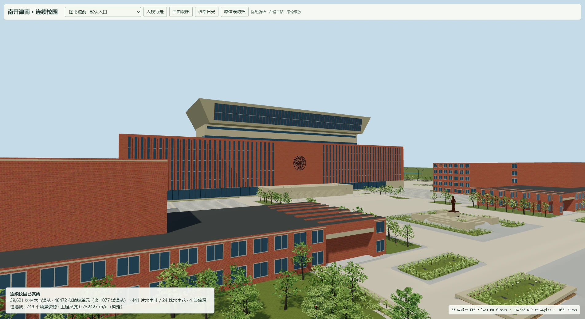
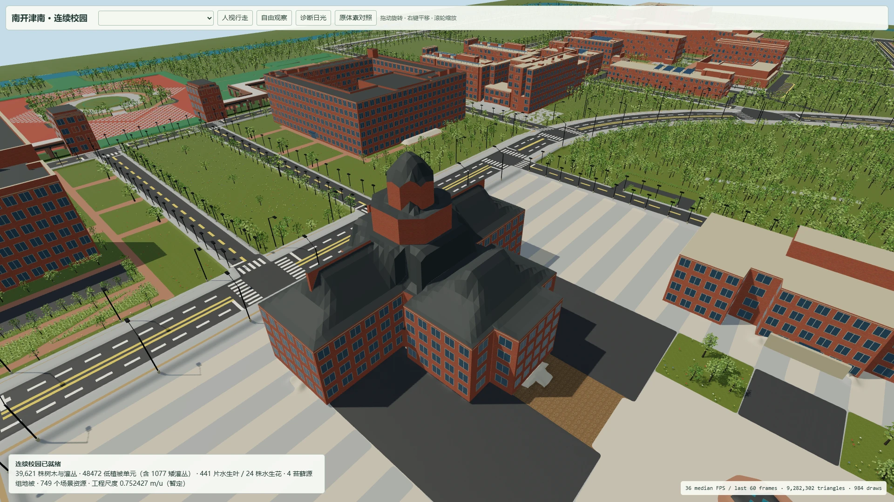
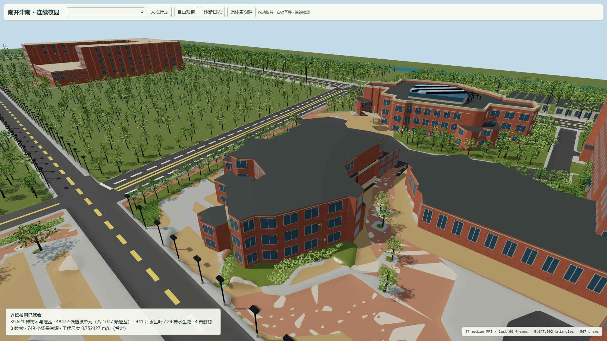
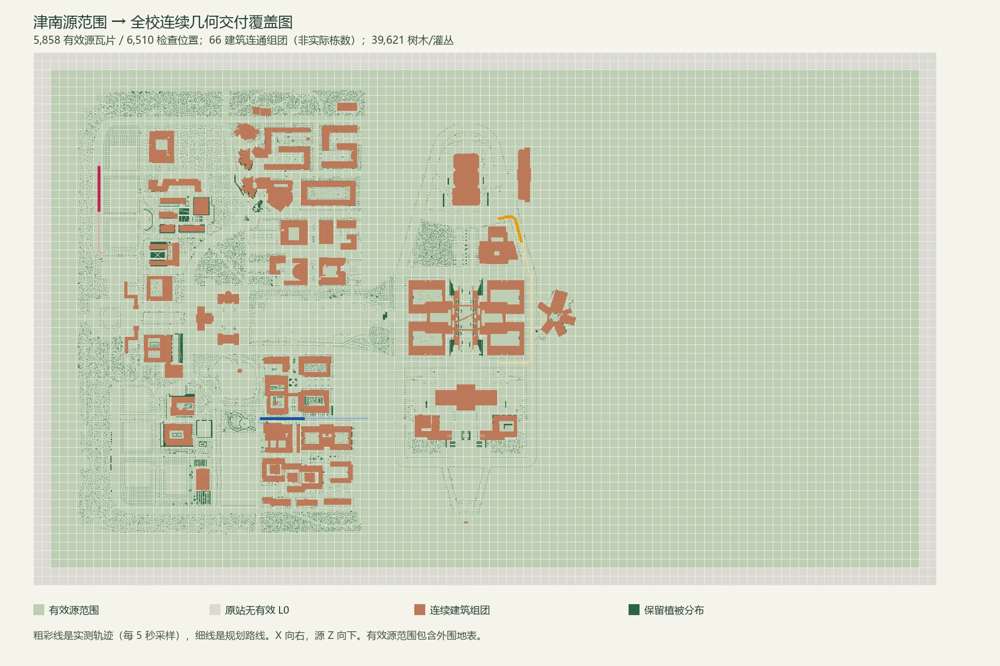

木斋馆
部分坡屋面和穹顶存在折皱，屋面形态与颜色仍需依据实景修正。
从原始地图到连续校园场景。这里展示当前实际运行的画面、可以亲自探索的模型，以及仍需修正的地方。

完整场景支持自由观察、地标切换及正常人视行走。建议使用有独立显卡的电脑浏览器；手机可直接查看下方截图与录屏。
包含全部 781 个模型，首次约下载 480 MB。完整网页和场景由 GitHub Pages 持久托管，无需演示电脑开机。可先查看本页截图与视频；模型加载进度显示在场景左下角。
八个原始视点分别保留源地图与当前工程截图。选择位置后可并排检查建筑、道路、绿化和场景边界。
图片由既有运行记录导出为网页格式。原图对照用于检查源地图范围及布局，不等于真实校园照片核验。
保留连续运行过程，直接查看建筑、树木、地面和连接关系。
原录屏为 1920×1080、25 fps，时长约 2 分 04 秒。网页播放副本为 720p；交互场景独立实时渲染。
性能结果来自这台测试电脑，不代表其他设备或外网加载速度。P95 帧时约 28.1–28.3 毫秒。
这是当前可以查看的候选工程。以下修正尚未接入默认场景，后续建设等待预览反馈。
部分坡屋面和穹顶存在折皱，屋面形态与颜色仍需依据实景修正。
南侧弧线有一段保留格距阶齿，连续几何修正尚未推广。
源地图的蓝绿场地被错误映射为灰米色，当前画面仍需修正。
部分原生铺地漏采样，出现杂色补值及局部隆起。
远景低细节模型的叶覆盖偏稀，仍需在保留全范围绿化的前提下调整。



预览保留基线中已接受的 5,858 块有效源区域，延续错误椭圆跑道、补地与裁剪的剔除结果。当前模型包含建筑、道路、地形、水面及分区植被。
66 个源连通建筑群是工程分组，不是校园实际建筑总数。缺少可靠的全校建筑清单与校区边界，因此不提供“全校完成率”。
网页发布只整合现有候选，不表示后续建设已继续或最终工程已交付。